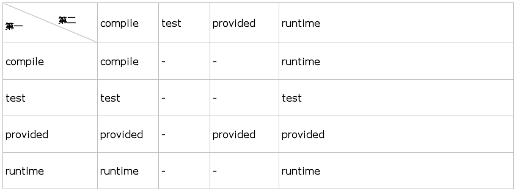

共 5 种依赖范围 , compile (编译) , test (测试) , runtime (运行时) , provided , system
不指定 , 则依赖范围默认为 compile
compile : (编译依赖范围) , 在编译 , 测试 , 运行/打包时都会使用这个依赖
test : (测试依赖范围) , 测试时会使用 , 编译 和 运行/打包 不使用 , 如 Junit
runtime : (运行时依赖范围) , 测试 和 运行/打包 时需要 , 编译不需要 , 如 JDBC 驱动包
provided : (已提供依赖范围) , 编译 和 测试时需要 , 运行/打包 时不需要 , 如 servlet-api
system : (系统依赖范围) , 本地依赖 , 不在 maven 中央仓库 , 从参与度来说也 provided 相同 , 不过被依赖项不会从 maven 仓库抓 , 而是从本地文件系统拿 , 一定需要配合 systemPath 属性使用
当 maven 依赖本地而非 repository 中的 jar 包 , sytemPath 指明本地 jar 包路径
A -> B (compile) 第一关系 : A 依赖 B compile
B -> C (compile) 第二关系 : B 依赖 C compile
当在A中配置
<dependency>
<groupId>com.B</groupId>
<artifactId>B</artifactId>
<version>1.0</version>
</dependency>
则会自动导入 C 包 , 关系传递如下表 :

依赖冲突的调节
A -> B -> C -> X (1.0)
A -> D -> X (2.0)
由于只能引入一个版本的包 , 此时 Maven 按照最短路径选择导入 X (2.0)
A -> B -> X (1.0)
A -> D -> X (2.0)
路径长度一致 , 则优先选择第一个 , 此时导入 X (1.0)
排除依赖
A -> B -> C (1.0)
此时在 A 项目中 , 不想使用 C (1.0) , 而使用 C (2.0)
则需要使用 exclusion 排除 B 对 C (1.0) 的依赖 , 并在 A 中引入 C (2.0)
pom.xml中配置
<!--排除 B 对 C 的依赖-->
<dependency>
<groupId>B</groupId>
<artifactId>B</artifactId>
<version>0.1</version>
<exclusions>
<exclusion>
<groupId>C</groupId>
<artifactId>C</artifactId>
<!--无需指定要排除项目的版本号-->
</exclusion>
</exclusions>
</dependency>
<!---在 A 中引入 C (2.0)-->
<dependency>
<groupId>C</groupId>
<artifactId>C</artifactId>
<version>2.0</version>
</dependency>
依赖关系的查看
进入工程根目录 , 执行 :
# mvn dependency:tree
会列出依赖关系树及各依赖关系
# mvn dependency:analyze
分析依赖关系